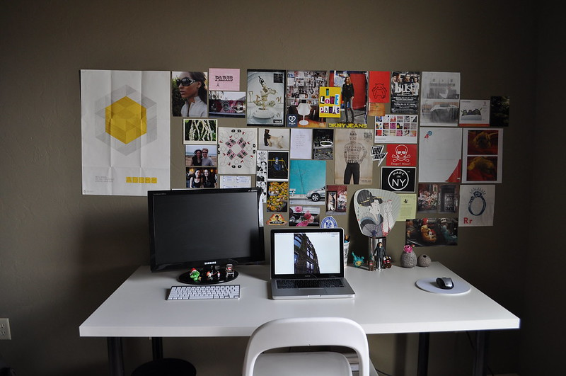
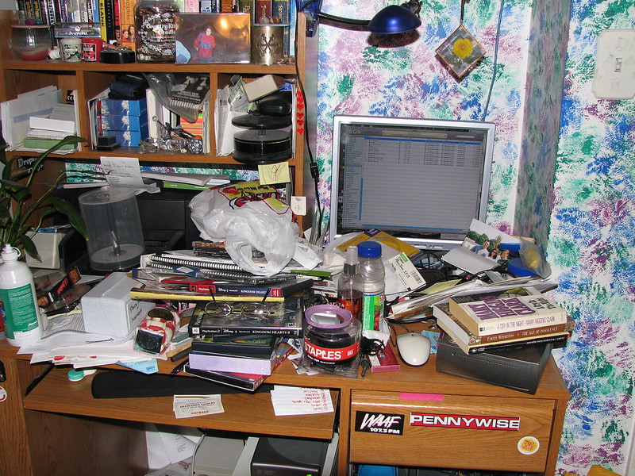

What to do
-
1. Keep Connected
We are all living in very different circumstances and to keep connected, we have to communicate in different ways. Please make sure that you are in touch with your A-level/BTEC teachers and let your sixth-form/college know if you are not well. This is not only to ensure you are getting educational resources, but it is also to make sure that they know you are ok and your family are well.
-
2. Routine, Structure and Sleep
It can difficult to adjust to remote learning, but follow your timetable, your lessons will be occurring as usual and so will tutor, if your sixth-form/college provides you with one. Use a structure and this will enable you to organise your workload and hopefully get to bed at a reasonable time. Use your time wisely and work similarly as if you sixth-form/college was physically open.
-
3. Struggling or Confused
I know that this can be a difficult shift in learning. If you are struggling with work, please don’t hesitate to ask for help and guidance from your teachers. If your IT network or system is not working, please let someone know. If you are struggling with pastoral issues please talk to a Senior Tutor or Pastoral Director at your sixth-form/college by email and they can contact you back.
-
4. Wellbeing - Emails and Wellbeing Appointments
Check your email everyday for suggestions and ideas from your sixth-from/college whilst we are on lockdown and working remotely. Also see if you can book a wellbeing appointment, with someone at your sixth-form/college to discuss any concerns you might have. Some sixth-forms/colleges allow you to book these appointments through their portal, and once you book a slot, one of their wellbeing team will call you back.
-
5. Useful resources
Spare some time from your extensive studies and visit these following links which I have put together that I'm sure you will get lots of useful infomation from:
- https://thesunflower.com/52352/lifestyle/five-study-spots-to-get-you-safely-out-of-your-house/: The Sunflower - Five study spots to get you (safely) out of your house
- https://theskillcollective.com/blog/coronavirus-study-tips: The Skill collective - Student life in the time of coronavirus
- https://www.theuniguide.co.uk/advice/student-life/studying-effectively-during-lockdown: TheUniGuide - How to study effectively during lockdown
- https://www.theguardian.com/education/2020/mar/26/how-to-study-at-home-during-coronavirus-by-online-students-and-tutors: The Guardian - Studying at home during coronavirus by online students and tutors
-
6. Watch this video
Here is a video that I think you will find very useful, about a student explaing how she has adapted to taking online classes during lockdown:
To summerise it is important to:
- Plan and write down your schedule
- Make a to do list
- Always wear a watch
- Switch places in the house
- Revise regularly
- Always shower before your online class
- Ask questions or doubts
-
7. Study area
It is important to keep your desk neat and tidy like the one shown here to the right. It has been shown in studies that the act of cleaning is beneficial and most importantly a well organised space makes a whole lot of difference to your studies. Creating a study friendly area is a must for improving those revision sessions.
Dont let your desk get as messy as the one shown on the left. Cleaning desks like these is shown to not only increases your productivity for the entire day, but also it significatly improves the air quality of your space. This is highly important if you suffer from asthma or allergies, but poor air quality impacts every students ability to perform well.